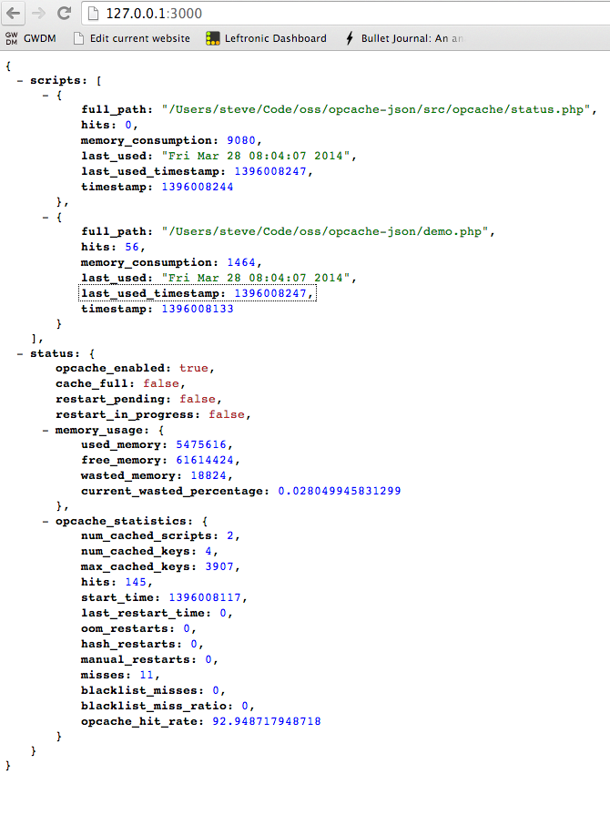

opcache-json
PHP 5.5 is awesome. It's fast, more modern, and has a bunch of great features. One of those new, awesome features is that it gets bundled with Zend Opcache by default— no more APC! Hooray!
But this win brings some new burden. Zend Opcache has a TON of configuration settings and monitoring them is not that easy. The default output is a little bit clunky and wasn't really designed with modern devops in mind.
Designed for Modern Devops
This library was designed to solve that problem. It cleans up Zend Opcache's internal stats and makes it easily grabbable as JSON, which your app can choose to expose to an internal HTTP endpoint. Opcache-json also exposes this data to statsd, which you can use to view historical cache data and watch trends.
Getting Started
The best way to install it is to use Composer and add the following to your project'scomposer.json file:
{
"require": {
"stevencorona/opcache-json": "*"
}
}
Basic Usage
// By default Statsd output is disabled
// $opcache = new Opcache\Status;
// Or pass in Statsd config with an array
// $opcache = new Opcache\Status(["host" => "localhost", "port" => "8125"]);
// Or configure the Statsd connection with a block
$opcache = new Opcache\Status(function() {
$c = new \Domnikl\Statsd\Connection\Socket("127.0.0.1", "8125");
return new \Domnikl\Statsd\Client($c, "opcache");
});
echo $opcache->status(true);
Statsd Output
Statsd output comes stock. Just configure your connection by passing a block or an array to the Opcache\Status constructor. The following keys are sent as gauge values to Statsd:
opcache.used_memory:5593056|g
opcache.free_memory:61515808|g
opcache.wasted_memory:0|g
opcache.current_wasted_percentage:0|g
opcache.num_cached_scripts:11|g
opcache.num_cached_keys:13|g
opcache.max_cached_keys:3907|g
opcache.hits:33|g
opcache.start_time:1396011952|g
opcache.last_restart_time:0|g
opcache.oom_restarts:0|g
opcache.hash_restarts:0|g
opcache.manual_restarts:0|g
opcache.misses:11|g
opcache.blacklist_misses:0|g
opcache.blacklist_miss_ratio:0|g
opcache.opcache_hit_rate:75|g
If you have a multi-server or multi-worker environment (hint: most of us do), you probably want to add your server hostname and PHP PID to the key namespace.
JSON Output
The JSON output is easy to ready and can be exposed as an internal HTTP endpoint, which can be consumed by human eyes or a monitoring systems. It's pretty straightforward— the output looks like this
